VS
Entrées opposées en ressort, « vs » en impulsion, ligne de collision jaune | corail + onde unique, halos légers, décompte qui « pop », fond qui avance doucement. Aucune nouvelle couleur.

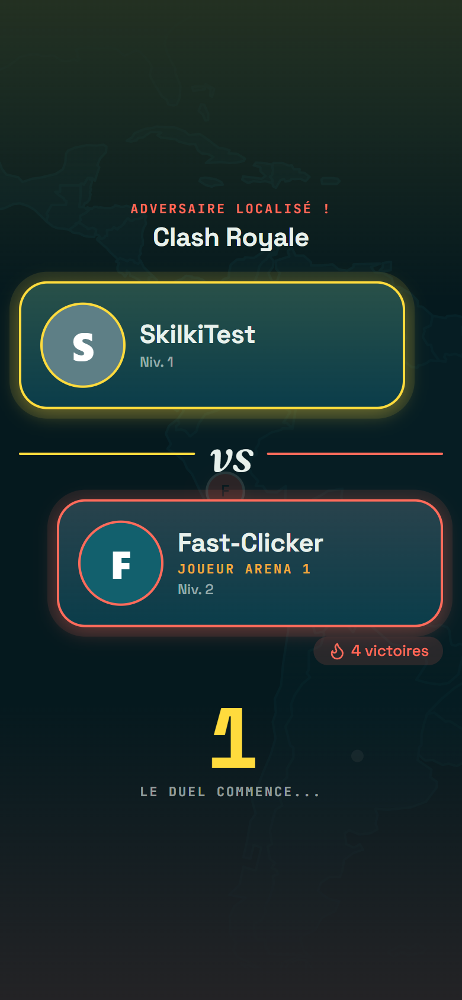
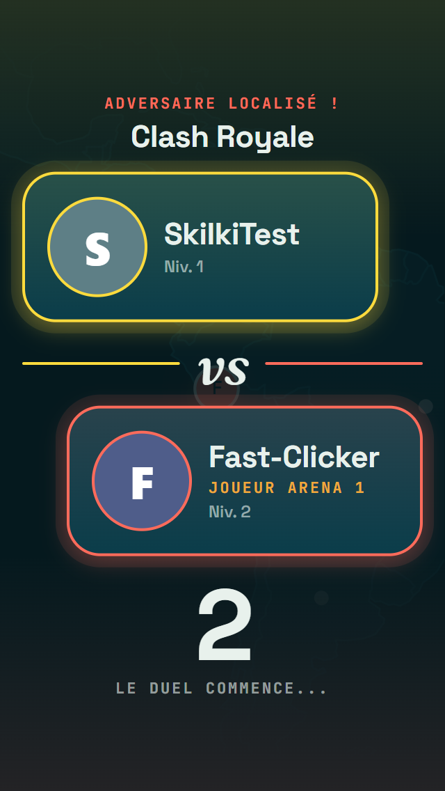
Même DA, mêmes arbitrages. +10 % de spectacle aux moments émotionnels (VS, révélation), plus de densité (Explorer), un peu de personnalité (page thème, Duel rapide), cas limites mobiles. Captures 390×844 sauf mention.
Entrées opposées en ressort, « vs » en impulsion, ligne de collision jaune | corail + onde unique, halos légers, décompte qui « pop », fond qui avance doucement. Aucune nouvelle couleur.


Question calée en haut (moins de vide), tuiles plus hautes. Réponses longues : bascule automatique en liste 1×4 (règle : une réponse dépasse 2 lignes de tuile ou contient un mot plus long qu'une ligne).

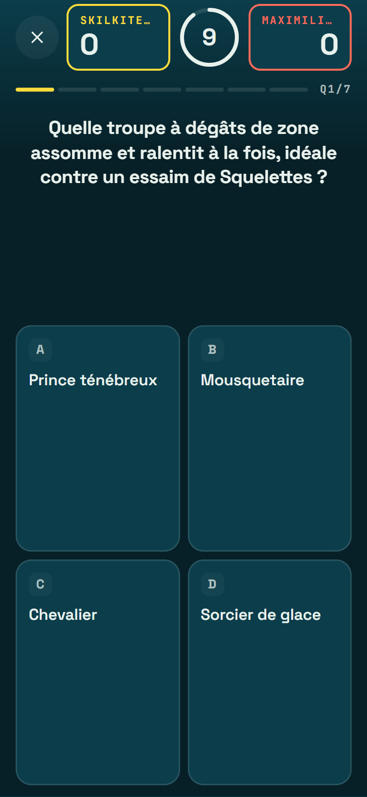
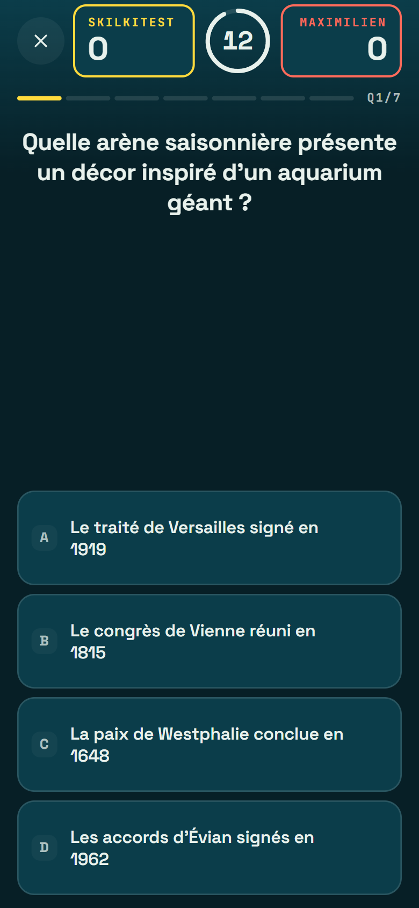
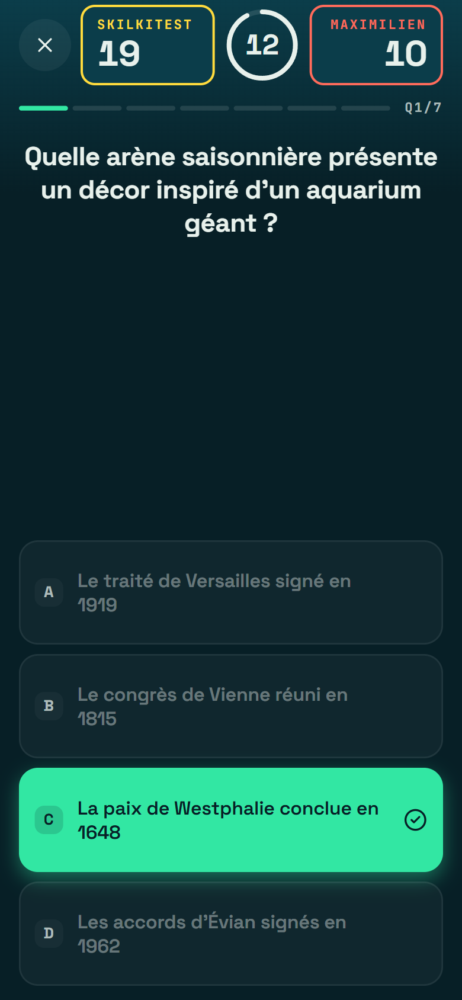
Arc ton-sur-ton derrière le hero avec l'illustration du thème en filigrane (6 %), liseré d'univers, en-tête sans répétition du nom, favori en corail.

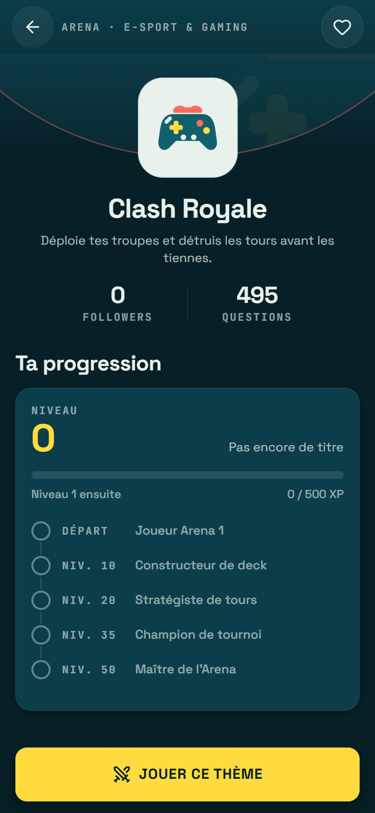
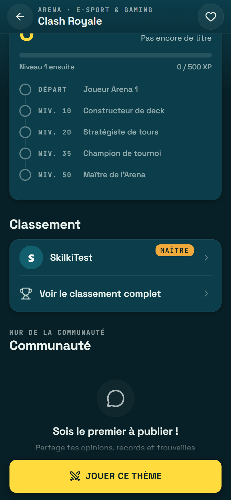
Titre compact, cartes « Tes thèmes » compactes, « À la une » en une rangée de 80 px, univers en tuiles de 64 px : 6 univers visibles dès le premier écran (contre 2).

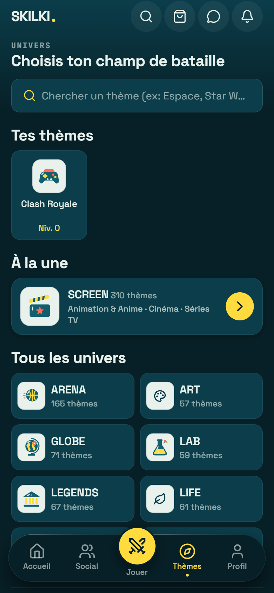
Structure inchangée. Duel rapide : treillis de losanges ton-sur-ton, épées en filigrane, liseré haut, ombre — le CTA jaune reste le seul point focal.

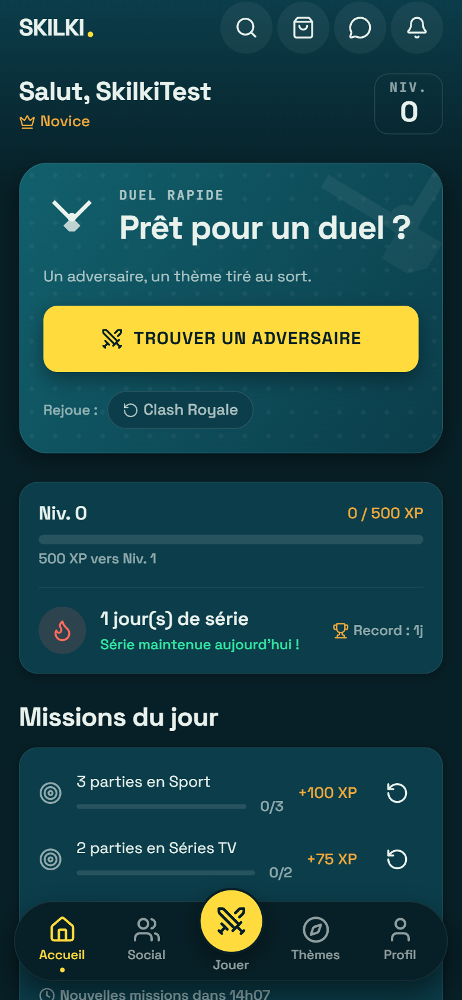
Rang → progression → victoires. Taux de victoire en grand + « x victoires / y duels », nombre brut conservé dans la grille. Écussons de succès vectoriels (or obtenu, violet rare, crème verrouillé).

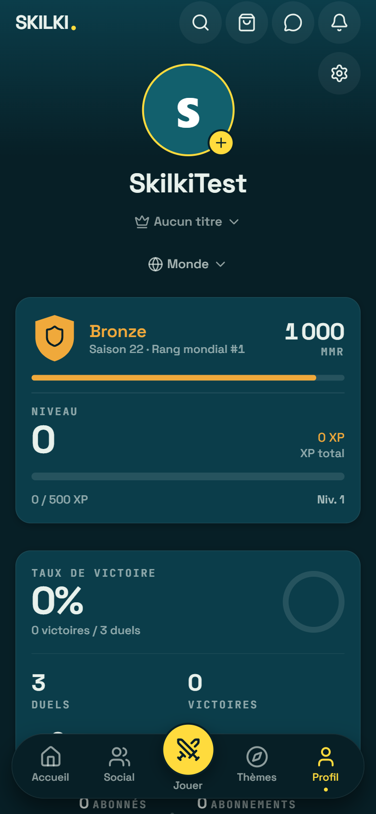
Aucun débordement horizontal, aucune erreur de développement affichée, CTA visibles, réponses longues entièrement à l'écran en 320×568.
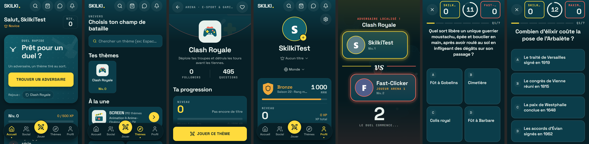
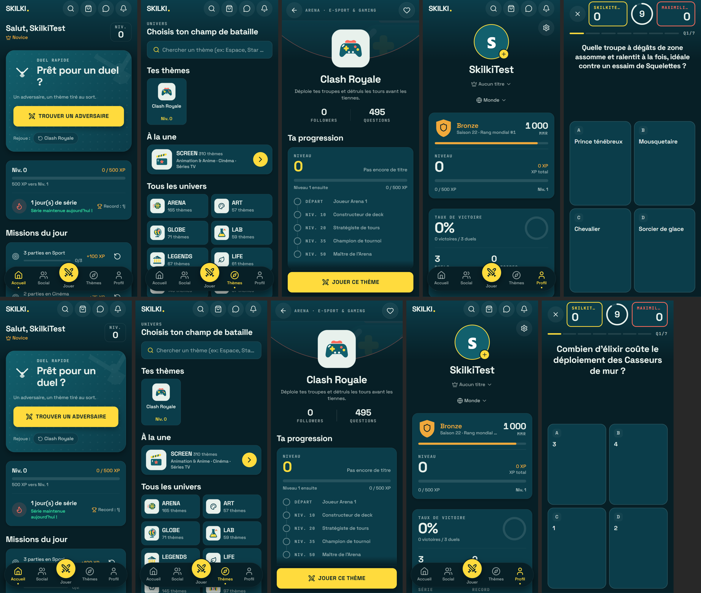